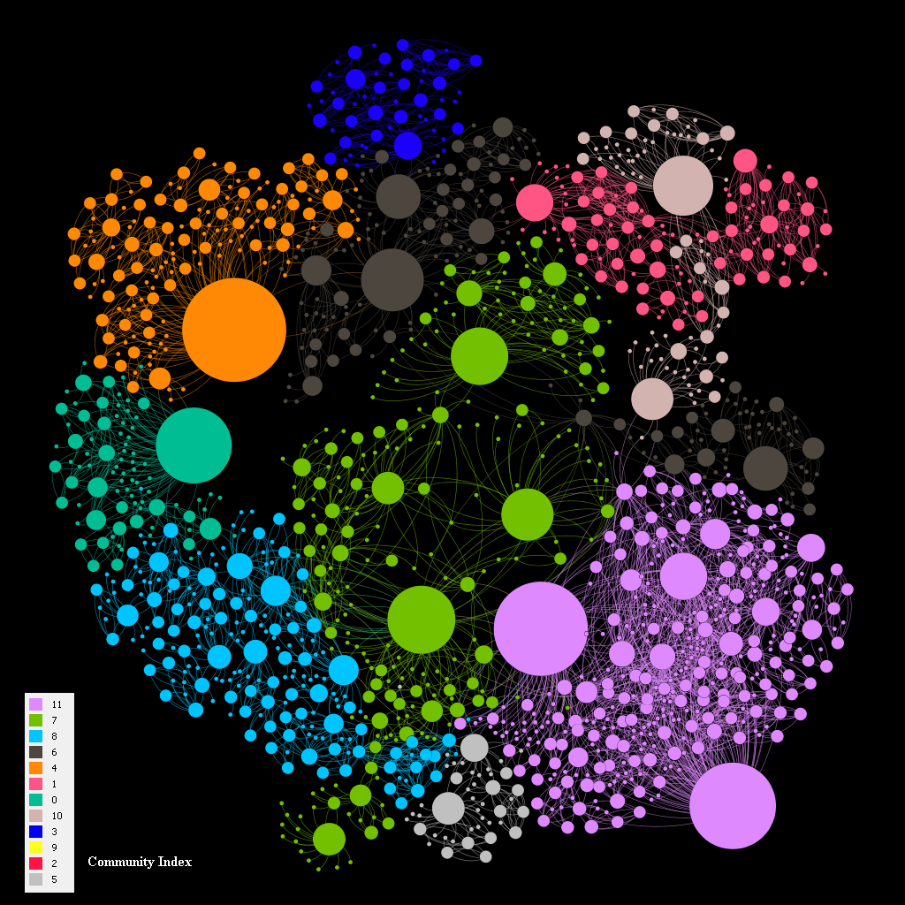
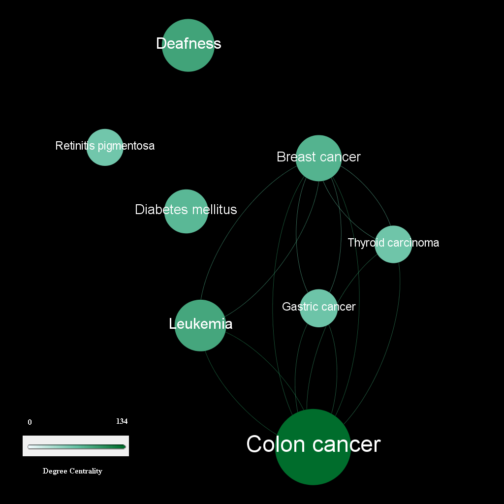
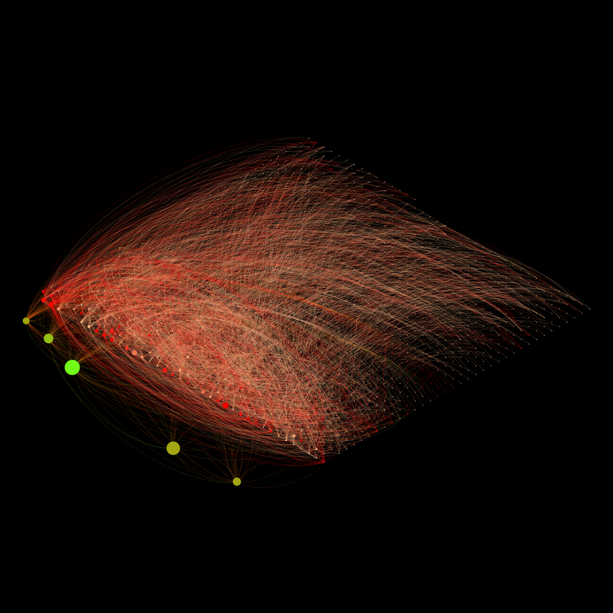
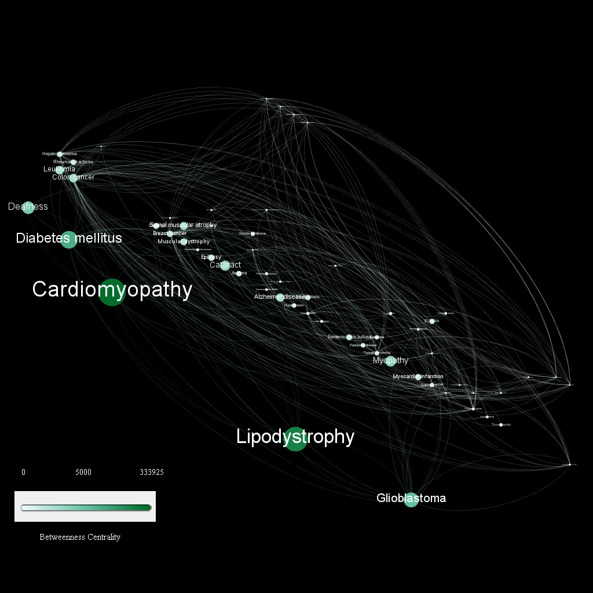
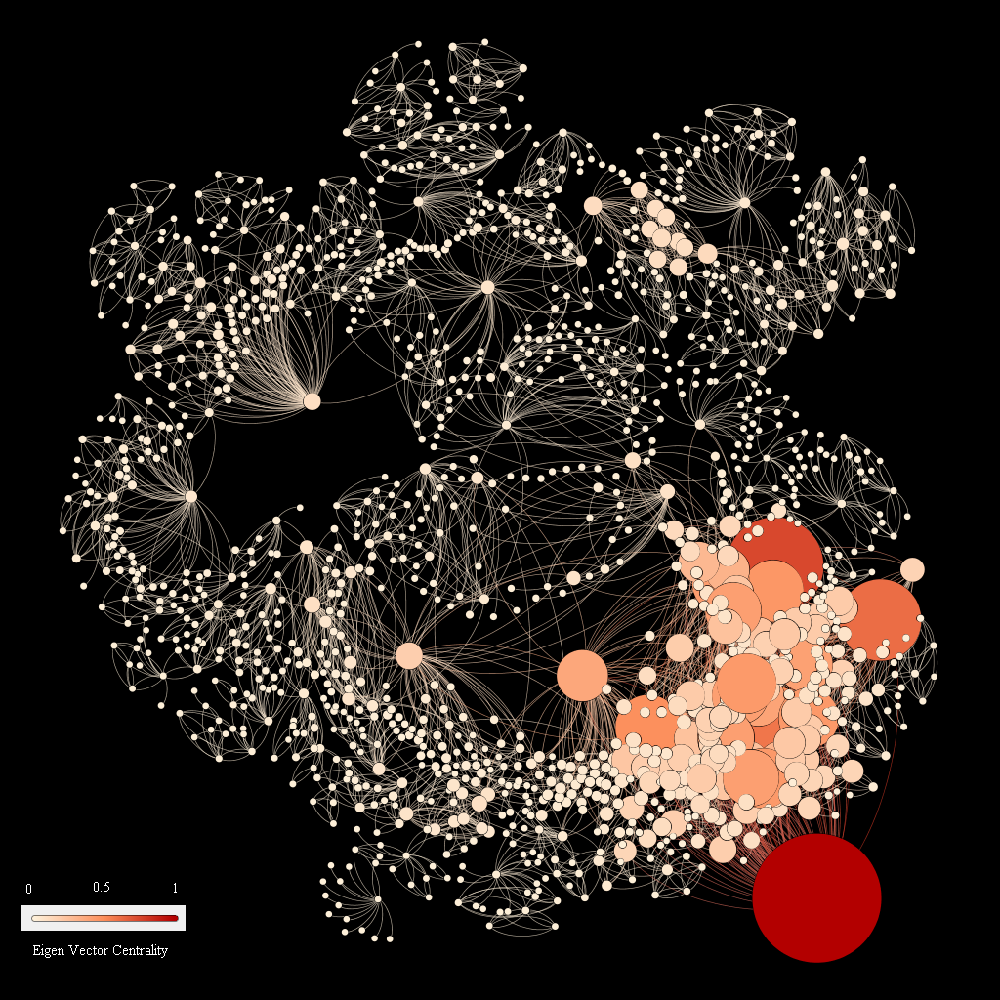
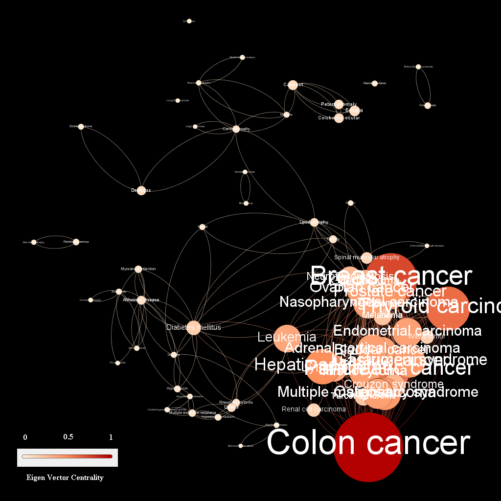

Homework #4 Graph Visualization
Title: Diseasome Network
Visualization of Diseasome network data using Gephi to encode features of data in order to gain insights.
Designed by Pranay Jagtap- Notes:
- Total Graphs:8
- List of graphs: Default(raw data), modularity graph(10 communities), degree centrality graph, betweenness centrality graph, eigen vector centrality graph.
- For centrality measures, there are 2 graphs for each where in the one on left inidcates centrality measure for entire graph which is then filtered to produce only the top centrality holder nodes along with lables
Default graph
Graph 1
Modularity Graph
Graph 2
Degree Centrality

Graph 3
Labled Degree Centrality(Filtered)
Graph 4
- Dataset
- It is a network of disorders and disease genes and it indicates the common genetic origin of different diseases.
- Dataset can be found here
- Dataset consists of disease genes and resulting diseases. The resulting network is that of disease genes and diseases associated with them combined to produce a good cause-effect bi-partite graph that can be visualized to gain insights on how these disease genes relate with diseases and other disease genes.
- It is interesting to note how this network when simply plotted as a graph would not provide much information. However, on applying layout algorithms and statistics, we can visualize these disease genes and diseases successfully to gain hidden knowledge
- Marks: We make use of circular nodes and connectingg edges as marks in the graph
- Channels: We make use of size of nodes and their colors as channels to represent their importance/ values.
- Default Graph
- Graph 1 is the default graph representation of nodes and edges in a diseasome network.
- a) Do you find communities (modularity) in the graph? Yes, we see Modularity in our graph for diseasome as seen in graph 2..
- We add modularity to the original graph in Gephi by setting resolution as 5 which results in graph 2 where we can see 10 communities
- As the dataset consists of disease genes and its associated diseases, we can see communities being formed with strongly associated genes that lead to one or more diseases
- Therefore, we find 10 communities in our graphs which are color coded to see distinct communities. We make use of nooverlap and Fruchterman Reigngold layout algorithm to get good visualization
- This randomized clustering helps us visualizing how different disease classes and genetic origins can be modularized which can help in further group analysis as we can expect a community to show stronger feature similarity
- b) What is the average degree centrality? Average degree centrality of the network is 2.767
- The size of each node is proportional to the number of genes participating in the corresponding disorder.
- A degree centrality of approximate 3 indicates that on an average 3 genes/class participate in realization of a particular disorder.
- Degree centrality of disease nodes are expected to be higher as multiple disease causing genes can lead upto them
- Graph 3 shows a complete netwrok graph with size and color attribute indicating nodes with high degree centrality
- Graph 4 is filtered to show nodes with degree centrality measure of 55 or more and we can see top 10 nodes with respect to degree centrality.
- c) What is the average betweenness centrality? The average betweenness centraility of our network is 6.6487
- High value of Betweenness centrality shows that given node has large influence of information flow in the graph.
- An average betweenness value of 6.6487 indicates that not many genetic origin finds its way to connect with different diseases through other genetic nodes.
- We can observe that Cardiomyopathy belonging to class Cardiovascular has the highest value of about 333925 followed by Diabetis,Glioblastoma,deafness.
- Hence, it indicates that these are some of the common diseases under different classes which connect genetic classes to other diseases in diseasome network
- To improve visualization and make data obvious for the user we use Isometric layout to pull out nodes with higher betweenness centrality.
- Graph 5 is partitioned using size and color indicating which node has higher betweenness centrality while graph 6 is further filtered with degree of node to get top nodes in terms of betweenness centrality
- Graph 6 is filtered to show nodes with high betweenness centrality.
- d) What is the average Eigenvector centrality? The average Eigen vector centraility of our network is 0.064
- Eigen vector centrality is calculated by counting the scores based on connection of nodes with other nodes with high scores. So it basically gives us an idea of how influential a node is in a network.
- Since our average Eigenvector centrality value is low, it suggests that influential nodes arent well distributed.
- Highest Eigen vector value is of node Colon cancer with Eigen vector centrality value of 1 which is the highest so it is connected to all others indicating it has the highest influence on network. This means given this node, all other nodes have a higher chance of existing in network or rather most genes nodes can lead to Colon cancer node.
- Graphs 7 and 8 fulfil the requirement of making node sizes linearly dependent on eigen vector centrality and we also make use of color hue as required for homework.
- Graph 7 is partitioned using size and color indicating which node has higher eigen vector centrality while graph 7 is further filtered with degree of node to get top nodes in terms of eigen vector centrality
- Graph 8 is filtered to show nodes with high eigen vector centrality.
Betweeness Centrality
Graph 5
Labled Between Centrality(Filtered)
Graph 6
Eigen Centrality
Graph 7
Labled Eigen Centrality(Filtered)
Graph 8